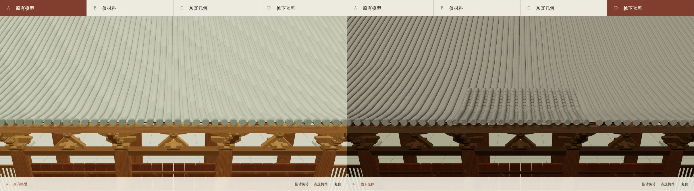

同一机位，分条件比较
对照对象为模型本身；照片相机尚未配准，不用于像素还原度判断。原始全页截图与状态日志保存在 runs/01c。

左 A：原卷几何、材料与照明；右 D：灰瓦局部几何、材料及照明的累积变化。须用下列中间条件分辨变化来源。


结论：独立瓦段与槽形板瓦提高了局部可读性；整体体量、围护、铺作及装饰仍有待核问题。完整研究记录
对照对象为模型本身；照片相机尚未配准，不用于像素还原度判断。原始全页截图与状态日志保存在 runs/01c。

左 A：原卷几何、材料与照明；右 D：灰瓦局部几何、材料及照明的累积变化。须用下列中间条件分辨变化来源。
结论：独立瓦段与槽形板瓦提高了局部可读性；整体体量、围护、铺作及装饰仍有待核问题。完整研究记录